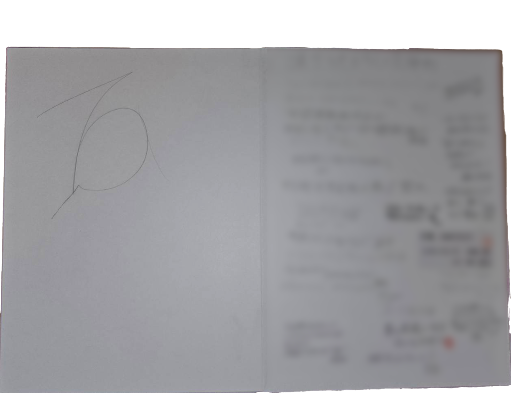

NAMELOGO
start
実はこのデザイン自体は小学生の頃のなんと無くの落書きから生まれました。
小学校の頃の卒アルに描かれたロゴ→
私はそのデザインがとても気にいっており、今の学校に通うようになってすぐにこのデザインを昇華して今の形になりました。

points
このデザインには私の名前をローマ字にしたものを組み合わせる事で制作しています。
実はこのデザイン自体は小学生の頃のなんと無くの落書きから生まれました。
小学校の頃の卒アルに描かれたロゴ→
私はそのデザインがとても気にいっており、今の学校に通うようになってすぐにこのデザインを昇華して今の形になりました。
このデザインには私の名前をローマ字にしたものを組み合わせる事で制作しています。